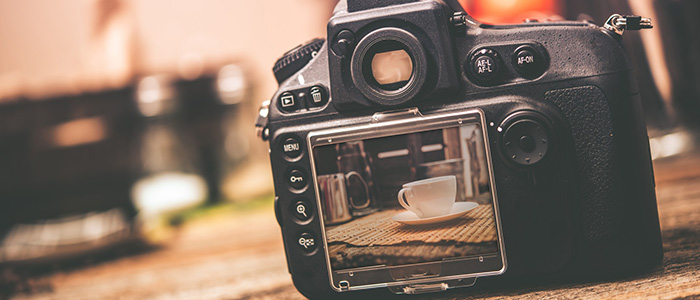

Fotoğraf Çekmek

Fotoğraf çekmek herkesin yapabileceği bir şey ama güzel fotoğraf çekmek farklı bir mesele. Sözlük yazarı "bili jackson", bu konuda sahip olduğu pek çok bilgiyi paylaşmış.
- Portre fotoğraflarında netleme yapılırken gözler ölçü alınmalıdır. gözler net değilse, fotoğraf net değildir.
- Fotoğrafta kadrajın içine doğru yürüyen insanlar (veya objeler) güzel görüntü verir. kadrajın dışına doğru hareket genel olarak rahatsız edicidir.
- Fotoğrafın arka planında net veya bulanık ne bulunursa bulunsun ana konu ile ilgili olmalıdır. tersi durumda bu görüntüler fonksiyonellik değil, gelişigüzellik sergiler.
- Peş peşe koşan, yürüyen insanlar, birkaç tane sıralı ağaç, elektrik direği, minare vs. fotoğraflanacaksa objelerin arasında eşik boşluk bırakılması önemlidir. bu fotoğrafa artı puan kazandırır.
- Gökyüzünün kullanıldığı fotoğraflarda altın kesim kuralı uygulanırken oranlama, vurgulanmak istenen bölgeye göre yapılır. gökyüzü vurgulanmak isteniyorsa gökyüzü; fotoğrafın 2/3’ünü, kara parçası vurgulanmak isteniyorsa gökyüzü fotoğrafın 1/3’ünü oluşturmalıdır.
- Güneş ışığında portre çekerken güneşi modeliniz ile aranıza konumlandırın. eğer güneş sizin arkanızdan doğrudan modelinizin yüzüne gelirse gözlerini kısar. güneş, modelinizle aranızda olursa ayrıca modelinizin saç hatları ortaya çıkar ve bu durum fotoğraf için daha estetik bir görüntü oluşturur.
- Portre fotoğrafları için en güzel ışık pencereden gelen ışıktır. modelinizi, bir omzu pencereye bakacak şekilde, pencerenin hizasında değil de biraz gerisinde konumlandırın ki pencerenin kenarlarından gelen ışığı kullanmış olun. bu ışık çok yumuşaktır. siz de bir omzunuz pencereye bakacak şekilde durun. ve fotoğrafı, modelinizin çok az üstünde olacak şekilde bakarak çekin.
- Modelinizi fotoğrafta daha ince göstermek istiyorsanız modelinizi kadraja göre hafif yan konumlandırın ve ellerinin vücuduna bütünleşmesine izin vermeyin. örneğin modeliniz elini beline koyacaksa dirsek kısmı vücuduna bütünleşmesin, biraz açık olsun. modeliniz makineye doğru hafif yan dururken, belinin üst kısmından itibaren tamamen makineye dönük olması gerekir.